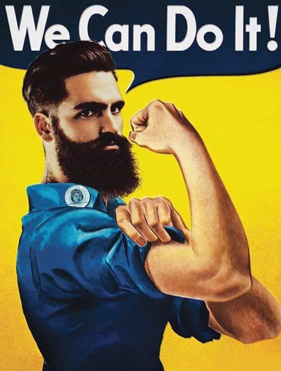

Dr. Ernest N. Wiseman is a sociobiologist with expertise in evolutionary sociology, interpersonal relations, and psychology of humor. His passion is creating hilarious t-shirts for dudes, and writing the Manliness & Humor blog


The latest wave of modern feminism and identity politics has ushered in a new level of intolerance towards men. Mainstream media and our increasingly effeminate culture continue to declare the masculine man an anachronism—an identity belonging to the men of a bygone era. Well, I say fuck that.
It’s high time we reclaim our collective identity as masculine men, and one way to do that is by developing skills that require working with our hands. Doing so will make us more self-sufficient, and it will boost our self-assuredness during a time when our identities as men are under constant siege of the post-modern feminist machine.
Today’s men are not as strong nor as manually skilled as the generations that came before ours. There’s no denying that. And as the information age continues to usher in more desk jobs and usher out more manual labor jobs than ever before, it’s easy for us—an Army of pencil-pushing desk jockeys—to become complacent and let ourselves get swept up in the female-dominated culture that’s typical of today’s office workplace. Shit has to change.

A few years back, I sat at my work desk, and for a few brief seconds, I had a flashback to my former life as a soldier. I was sitting out in the field, leaning on my ruck, holding my rifle, and it felt good. It felt right.
Once the moment passed and I came back to reality, I felt strange sitting at that desk. I almost felt sad, like I was mourning the loss of the man as I used to be. I was having an identity crisis, and I knew shit had to change. I eventually decided to buy a project muscle car with the hopes that that would help me shake the cobwebs from my masculine identity.
I got a great deal on a Fox Body 5.0 Mustang and was stoked thinking about how badass it would be to drive to work in that thing. It made me smile imagining the uptight women in my office grimacing at the sound of a muscle car pulling up to our building.
I soon realized, however, that pissing-off those stupid bitches would have to wait. There was a major issue with the car, which the dickhole who sold it to me—a self-proclaimed Mustang expert—“forgot” to mention. The car would intermittently crap out during city driving, and instead of rising to the challenge and figuring out the problem—something I’d expect any self-proclaimed Mustang expert to do—the guy made it my problem.
At the time, I knew next to nothing about cars, but I had bought it as a project and was committed to it, so I had no other option than to figure shit out and learn as I went.
Fast-forward nine months and hundreds of hours worth of trial and error into the future, and I had that sumbitch ripping up down the street like a raped ape, as it still does to this day. Was it frustrating as fuck having to dick with the thing for that long? Shit yes, it was. Was it a gigantic pain in the ass having to constantly google shit to know what the fuck I was doing? Absolutely. Was it a huge waste of time fixing it myself? Not in the least.
I went into it knowing I knew jack shit about fixing cars, but I walked away from it with more than technical knowledge acquired; I walked away as a more self-sufficient, more self-assured man. And while I certainly felt like a better man for having accomplished something cool and manly, the fixing part wasn’t the pivotal moment in the experience. Nope. The pivotal moment was the moment I bought the car because that’s when I committed myself to becoming that more self-sufficient, more self-assured man I knew I could be. I just didn’t realize at that time that I’d be taken on a nine-month journey through 5.0 Mustang hell and back to get where I was trying to go.

I fear that thanks to feminist efforts to turn us into the submissive self-hating lapdogs they desperately want us to be, we are losing sight of the importance of retaining our self-sufficiency and self-assuredness as men. There’s never been a more important time to buck the feminist movement than now, so take the first step and do something that will commit you to becoming the type of men feminists love to hate. And once you start acquiring those skills and feeling invigorated with renewed manly self-assuredness, go rub that shit in their stupid grimacing feminist faces.
Read More: Why Feminists Hate Male Sexuality